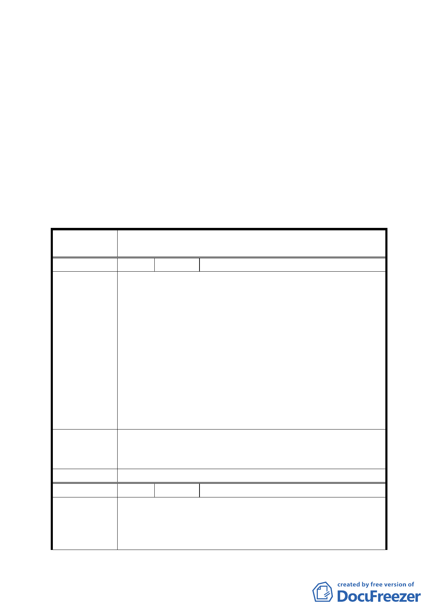

五、公民或團體所提意見：詳綜理表。
六、變更理由係尚華仁愛大樓因九二一震災受損至今已近八
年，依現行該地區規定辦理重建，將使 1 樓店面面積與每
層可配置戶數縮減，不符現住戶需求，故提案要求放寬建
蔽率，以利更新事業推動。
決議：
一、照案通過。
二、公民或團體所提意見審決如後附綜理表。
臺北市都市計畫委員會公民或團體陳所提意見綜理表
案
名
修訂臺北市信義區逸仙段 3 小段 294-4 地號第 4-1 種
住宅區（特）土地使用分區管制計畫案
編 號 １ 陳情人 吳國賢
一、尚華仁愛大樓因九二一震災受損至今已 8 年，為促進本
受災區能早日重建，盼市府放寬建敝率為 69％，以利
住戶整合成功，早日改建，免得未來天災發生造成公共
行人之危害。
二、本尚華仁愛大樓位於仁愛路光復南路交叉口，交通及行
陳情理由
人來往繁多，更處於國父紀念館及光復國小之人行必經
要道，且市府假日、節日舉辦各項活動甚多；早晨晨操
年長者及附近上學的國家未來主人翁小朋友們；及各項
活動之舉辦時各地湧入之人潮，為考慮公共之方便及安
全，讓來往人潮有遮風蔽雨之便，且台灣處亞洲颱風
帶，為免行人受到公共建設或樹木或招牌等掉落擊傷
等，盼市府能修正第二項得設置騎樓。
一、將建蔽率提高至 69％。
建 議 辦 法 二、變更內容第二項修正為「本案基地沿仁愛路、光復南路
側應留設騎樓或無遮簷人行道」。
委 員 會 決 議 維持原公展計畫。
編 號 ２ 陳情人 陳顯雄
一、依修正變更內容第二項所載：本基地沿仁愛路、光復南
陳情理由
路應退縮留設 3.64 公尺之無遮簷人行道。亦即不得設
置騎樓不同現行法規規定，本案基地沿仁愛路光復南路
側應設置騎樓之規定。造成本案重建建築牆面線與他日
11